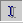
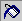
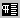
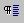

Vsebina
1. Uvod
1.1 Zaženimo ga!
2. Pisanje in oblikovanje OpenOffice.org dokumenta z besedilom.
3. Slogovnik
4. Odpiranje, shranjevanje in tiskanje dokumentov z besedilom s paketom OpenOffice.org
5. Zahvala
6. Licenca
Ta how-to predvideva, da bralec razume nekatere izraze, ki so pogosto uporabljeni v pisarniških aplikacijah, kot so levi in desni klik, kurzor, spustni menu in pogovorno okno. Namen tega dokumenta je skozi nekaj enostavnih primerov razložiti, kako deluje OOo Writer in kaj moramo narediti, da ustvarimo dokument. Vse tukaj navedene informacije so bile preizkušene na Microsoft Windows verziji OOo pisarniškega paketa; ne glede na to, pa so v veèini primerov uporabne tudi na drugih platformah.
Zdaj pa nadaljujmo do našega prvega stika z Writer-jem: OOo urejevalnikom besedila.
Potem ko zaženemo Writer z izbiro Dokument z besedilom iz OOo skupine v Start Menuju na Windows raèunalniku, ali zaženemo skripto soffice na Linuxu, bi morali zagledati glavno okno, kot ga vidite spodaj:
Vidimo lahko 5 orodnih vrstic:
· Vrstica z menuji v kateri so ukazi v obliki menujev,
· Funkcijska vrstica vsebuje ikone za pogosto uporabljena opravila: odpri, shrani, kopiraj, izreži, prilepi, i.t.d.
· Ukazna vrstica z ikonami za oblikovanje besedila,
· Glavna orodna vrstica s posebnimi orodji, ki jih uporabljamo pri vnašanju besedila: vstavljanje polj, slik in drugih objektov.
· Statusna vrstica, ki prikazuje trenutno stran, trenutno predlogo, odstotek poveèave, naèin vstavi ali prepiši, naèin izbire in naèin hiperpovezave.
in tudi 2 plavajoèi okni:
· Slogovnik. Z nekaj kliki lahko spremenimo slog besedila,
· Krmar. To orodje je posebej uporabno pri urejanju dolgih dokumentov, z veliko poglavji, razdelki, slikami in podobno.
Èe plavajoèih oken na zaèetku ne vidite, ju lahko prikažete s klikom na ikono Krmar in ikono Slogovnik ki ju najdete v funkcijski vrstici.
Zapomnite si, da lahko, èetudi se vam je zgodila velika nesreèa pri urejanju dokumenta, vedno ponovno naložite zadnjo shranjeno verzijo v menuju Datoteka, ali pa ustvarite nov prazen dokument:
1. pritisnite CTRL+N na tipkovnici, (pritisnite in držite tipko CTRL in nato še tipko N),
2. izberite Datoteka-Nova-Dokument z besedilom iz vrstice z menuji ali kliknite ikono Nov Dokument v funkcijski vrstici.
Sedaj pa ustvarimo nov dokument z besedilom:
Èe ste dosedaj delali s drugim urejevalnikom besedila, ne boste imeli težav z uèenjem osnovnih funkcij OOo Writer-ja. Veliko funkcij in bližnjic je celo enakih kot v drugih Office paketih. Polje dokumenta, kjer vnašate besedilo je doloèeno s tanko sivo èrto – omejevalnik besedila. Te robove lahko spremenite na naslednji naèin:
1. v Slogovniku kliknite na ikono Slogi Strani ,
2. izberite in kliknite z desno miškino tipko na slog Privzeto, in prikazal se vam bo kontekstni menu,
3. iz kontekstnega menuja za prikaz pogovornega okna Slog odstavka izberite Spremeni...,
4. v pogovornem oknu Slog odstavka, nastavite velikost robov v razdelku Page tab.
Opozorilo: Èe boste spremenili privzeti slog strani, bo to pomenilo, da bo vedno kadar boste želeli ustvariti nov dokument, vaša stran imela nove privzete nastavitve robov. Èe želite, da bodo vaše spremembe veljale le za trenutni dokument pa je najbolje, da ustvarite nov slog strani na isti naèin kot zgoraj, razen z izbiro Nov... v kontekstnem menuju v toèki 3 zgoraj. Ustvarili boste popolnoma nov slog in nove nastavitve robov bodo na voljo le, kadar boste na strani uporabili ta slog.
Pri spreminjanju robov polja dokumenta bodite previdni, ker jih lahko nastavite izven natisljivih robov vašega tiskalnika. Èe boste nastavili takšne vrednosti, se vam bo prikazalo okno z opozorilom.
Utripajoèi kurzor kaže mesto, kamor boste vnesli besedilo, èe boste kaj natipkali. Poizkusite naprimer napisati stavek: Lep pozdrav! (klasika, kajne?)
Besedilo bo napisano s privzeto pisavo in slogom. Ponavadi se pri pisanju besedila v dokumentu pred drugim besedilom to obstojeèe besedilo pomika v desno stran z vstavljanjem. Vendar pa lahko vèasih uporabimo tudi drug naèin. Kadar želite naprimer zbrisati nekaj besed brez uporabe tipke za brisanje, lahko uporabite naèin pisanja èez obstojeèe besedilo (overwriting mode). Z levo tipko na miški kliknite na kvadratek INSRT v statusni vrstici. Napis v kvadratku se bo spremenil v OVER. (med obema naèinoma lahko preklapljamo tudi s tipko Insert na tipkovnici) Sedaj bo besedilo ki ga boste napisali, prekrilo obstojeèe besedilo v dokumentu. V naèin vstavljanja se lahko vrnete s ponovnim klikom na isti kvadratek v statusni vrstici. V vsakem novem dokumentu se kurzor nahaja v zgornjem levem kotu polja dokumenta. Èe želite prièeti s pisanjem na drugem mestu in še nimate nobenega besedila imate 3 možnosti:
· Lahko natipkate veliko nepotrebnih odstavkov s pritiskanjem tipke return na tipkovnici, dokler ne pridete do željenega mesta. To je slaba in neprofesionalna rešitev. Uporabite jo le, èe ste zelo, zelo neizkušeni.
· Lahko kliknete ikono Neposredne kazalke v glavni orodni vrstici in vkljuèite to funkcijo. Ta ikona vam omogoèa vklop in izklop funkcije s ponovnim klikom nanjo. Pri premikanju miškinega kazalca po praznem polju dokumenta boste na levi videli moder trikotnik. Pri ponovnem kliku se bo kazalec premaknil toèno v vrstico in položaj (levo, v sredino ali desno), kjer je trikotnik.
· Na koncu, lahko iz vrstice z menuji izberete tudi Vstavi-Okvir in vnesete okvir z besedilom. Lahko ga boste postavili kamorkoli v vašem dokumentu.
Seveda, pa dokumenti sestavljeni iz dveh besed, niso posebej uporabni. Zato natipkajte vsaj 2 ali 3 vrstice besedila in pritisnite tipko RETURN le na koncu odstavka. Tako ste napisali odstavek. Sedaj napišite še kaj, da boste ustvarili dokument z dvema odstavkoma. Morda sedaj želite izbrati del napisanega besedila in preizkusiti kakšno funkcijo. Izbor besedila je poseben naèin, kjer z osvetlitvijo dela besedila doloèimo, nad katerim besedilom bomo izvedli kakšno dejanje. Ponavadi je izbrano besedilo prikazano z belimi èrkami na èrni podlagi. Besedilo lahko izberete na naslednje naèine:
· izberite eno besedo z dvojnim klikom nanjo.
· izberite vrstico s trojnim klikom kjerkoli v izbrani vrstici.
· izberite veè vrstic z enim levim klikom miške ob zaèetku besedila, ki ga želite izbrati in povlecite miško do zadnje besede, ki jo še želite izbrati, brez da bi pri tem izpustili tipko na miški.
· izberite dele besedila, ki niso skupaj. Izberite prvi del besedila in nato s pritisnjeno tipko CTRL izberite naslednji del.
· izberite celotno besedilo z zaporednim pritiskom tipk CTRL+A na tipkovnici. (Pritisnite in držite CTRL, nato pritisnite še A.)
Namig: funkcija izbora besedila je zelo moèno orodje v povezavi s funkcijo Najdi, ki jo poklièete s tipkami CTRL+F ali s klikom na ikono Najdi vkljuèeno/izkljuèeno v glavni orodni vrstici. V okence 'Najdi' v pogovornem oknu, ki se bo prikazalo, lahko vpišete besedo, ki jo želite poiskati v vašem dokumentu. S klikom na gumb Najdi vse v pogovornem oknu, bo program poiskal vse iskane besede v vašem dokumentu. Tako boste lahko izvedli oblikovanje ali urejanje, ki ga želite. Bodite pozorni na to, kam boste kliknili pri preklopu pogovornega okna Najdi v glavno okno dokumenta. Èe kliknete znotraj polja dokumenta bodo vse izbrane besede ugasnjene, zato boste morali iskanje ponoviti. Temu se lahko izognete tako, da kliknete v naslovno vrstico glavnega okna (prva vrstica zgoraj, kjer je prikazan naslov vašega dokumenta).
Nad izbranim besedilom lahko izvedete štiri glavna dejanja: kopiranje, izrezovanje, brisanje in oblikovanje. Èe želite v odložišèe kopirati del izbranega besedila pritisnite CTRL+C. Kadar pa želite besedilo izrezati in odložiti v odložišèe pritisnite CTRL+X. Vaše besedilo lahko iz odložišèa prilepite nazaj, s pritiskom na CTRL+V. Te bližnjice so standardne, prav tako pa so vam v funkcijski vrstici na voljo tudi ikone.
Dejanje brisanja izbranega besedila je prav tako enako kot pri drugih Office paketih, ki ste jih morda uporabljali: enostavno pritisnite tipko za brisanje, preslednico ali pa natipkajte nekaj, kar želite prepisati èez izbrano besedilo. Na drugi strani pa se oblikovanje v Ooo nekoliko razlikuje od naèinov, ki ste jih poznali dosedaj. Pravzaprav poznamo dva naèina za oblikovanje besedila v Writer-ju:
1. uporabite orodja, ki jih najdete v ukazni vrstici ali v menuju za oblikovanju, se the tools provided from the Command Bar or Format Menu,
2. uporabite Slogovnik (poglejte naslednjo poglavje)
Zaenkrat bomo pogledali le toèko 1.
Izbrano besedilo lahko priènete spreminjati z zamenjavo lastnosti sloga. Potem ko izberete kaj želite spremeniti, kliknite na eno izmed ikon z lastnostmi sloga v ukazni vrstici. Te spremenijo izbrano besedilo (od leve proti desni) v Krepko, Ležeèe in Podèrtano. Do istega rezultata pridete tudi z uporabo bližnjic na tipkovnici:
· CTRL+B za krepko,
· CTRL+I za ležeèe,
· CTRL+U za podèrtano.
Bolj natanèno lahko doloèite lastnosti sloga besedila za uporabo Oblika-Znak... ali Oblika-Odstavek... iz vrstice z menuji, glede na del besedila, ki ga želite spremeniti. V OOo lahko spremenite poravnavo besedila ter barvo in ozadje besedila:
1. Kliknite na eno od ikon za poravnavo v ukazni vrstici, kadar želite spremeniti poravnavo besedila (levo, na sredino, desno ali obojestransko).
2. Kliknite in nekaj sekund držite na eno od barvnih ikon v ukazni vrstici, kadar boste želeli prikazati barvno paleto, s katere boste izbrali željeno barvo.
Namig:barvne palete lahko spremenite v plavajoèe okno, ki bo odprto, dokler ga ne boste zaprli s pritiskom na gumb za zapiranje v desnem zgornjem kotu okna. Za izvedbo te operacije ponovite drugi korak, ki je opisan zgoraj, kliknite in držite levi gumb na miški v naslovni vrstici okna barvne palete, nato povlecite miško na neko mesto v dokumentu in konèno spustite gumb. Tudi druga pojavna okna v glavni orodni vrstici se obnašajo enako.
Èe ste izvedli vse procedure prikazane dosedaj, ste se nauèili natipkati in spremeniti glavne lastnosti vašega besedila. Vendar pa dokumenti vèasih potrebujejo popolnoma nov "videz in obèutek". To lahko dosežete z uporabo nove pisave ali velikosti, skupaj in v povezavi s poudarjanjem posebnih delov besedila kot so naslovi, navedki, komentarji in podobno.
Ponavadi je privzeta pisava novega dokumenta nastavljena na "Thorndale" ali "Times New Roman". Lahko se zgodi, da teh pisav nimate namešèenih v vašem sistemu, ali pa vam niso všeè. Privzeto pisavo lahko spremenite z izbiro Orodja-Možnosti v vrstici z menuji in brskanjem v pogovornem oknu Možnosti ki se pojavi, do Dokument z besedilom-Osnovne pisave (zahodne). Tam lahko spremenite privzete pisave, naslove, sezname, napise in kazala. Na žalost je ta rešitev zelo radikalna. To pomeni, da boste spremenili pisavo v vseh dokumentih, ki ste jih ustvarili.. Druga, boljša rešitev, s katero pridete do istega rezultata pa je, èe uporabite spustni menu Spremeni ime in velikost pisave , ki se nahaja v ukazni vrstici.
Prvi menu prikazuje predogled vseh pisav, ki so vam na voljo v vašem sistemu. Èe želite videti celoten spisek, kliknite na majhen gumb s pušèico na desni strani, nato pa lahko z drsnikom pregledate vse pisave. Drugi, pa prikazuje višino pisave ki je prikazana v toèkah. Izberite besedo ali del besedila in poizkusite spremeniti vrsto in velikost pisave. Kot reèeno, je to najboljši naèin za hitro izdelavo naslovov ali drugih posebnih oblik besedila.
Samo za uporabnike Linux-a: OOo lahko uporablja can use TrueType pisave, ki so namešèene v vašem sistemu, prav tako pa zna uporabiti tudi ostale pisave, ki jih želite dodati neodvisno od drugih aplikacij. Kot korenski uporabnik zaženite skripto spadmin, ki jo najdete v OOo namestitvenem imeniku. S tem orodjem lahko dodajate nove pisave in tudi tiskalnike.
Predstavljajte si, da ste napisali dolgo besedilo z veliko odstavki, ki imajo razliène sloge naslovov, nato pa vam pet minut pred koncem službe vaš šef reèe: "Za naslov imam raje pisavo Arial namesto Verdana, za normalno besedilo pa mi je bolj všeè Georgia kot Times New Roman. Prosim, spremeni pisave preden odideš domov…" Oh da, imate 5 minut èasa, da spremenite na desetine naslovov in odstavkov!
Èe besedila ne bi urejali s pisarniškim paketom OOo, bi bila takšna naloga prava noèna mora. Tako pa lahko uporabite Slogovnik in pospešite spremembe, ki jih želite narediti.
Slogovnikovo plavajoèe okno, ki ga vidite spodaj, bi moralo biti prikazano vedno, kadar odprete nov dokument.
Èe okna ne vidite, kliknite na ikono Slogovnik ki jo najdete v funkcijski vrstici.
To smo že uporabili, ko smo v prvem delu ustvarili nov slog strani. Sedaj pa bomo izvedeli še nekaj veè o njegovi uporabi.
Okno Slogovnik sestavlja vrstica z orodji tik pod naslovno vrstico, kjer je 5 ikon na levi za preklop med razliènimi slogi: Odstavka, Znakov, Okvira, Strani in slogi Oštevilèenja; in še 3 dodatne na desni strani, ki omogoèajo dostop do nekaterih posebnih funkcij: Naèin zapolnitev oblik, Nov slog iz izbora in Posodobi slog. Pod to vrstico je prostor, kjer so prikazani vsi slogi, ki so na voljo. Spodaj pa vam okence omogoèa izbiro razliènih filtrov za prikaz, kot na primer: 'Slogi poglavja' namesto 'Vsi slogi' , tu je tudi 'Samodejno'.
Po tem kratkem pregledu, se lahko vrnemo na primer o katerem smo govorili na zaèetku tega poglavja. Kako lahko spremenimo vse te naslove in odstavke v 5 minutah? Èe ste uporabili statiène sloge, kot je to prikazano v drugem poglavju, je to skoraj nemogoèe. To metodo uporabite le kadar morate oblikovati en ali dva naslova ali besede, niè veè. Z Slogovnikovimi slogi (pravimo jim tudi 'dinamièni slogi') pa imate možnost spreminjati veè odstavkov besedila, ali celo knjigo s samo nekaj kliki. Pa poglejmo kako deluje:
· Kliknite na prvo ikono, ki se imenuje 'Slogi odstavka', da prikažete vse sloge, ki se nanašajo na odstavek. Opazili boste, da so nekateri slogi že pripravljeni za uporabo.
· Da bi jih uporabili na besedilu, ki ste ga napisali, lahko izbirate med:
1. oznaèite besedilo, ki mu želite doloèiti slog, nato pa z dvojnim klikom iz Slogovnika izberite slog. Izbrani slog bo takoj prikazan.
2. enkrat kliknite na slog v Slogovniku, nato pa ponovno kliknite na ikono Naèin zapolnitev oblik . To orodje vam bo na voljo, dokler ga ne boste ponovno kliknili. Kurzor se bo spremenil v utripajoèo sivo navpièno èrto, miškin kazalec pa v košaro z barvami. Kadar kliknete znotraj odstavka ali naslova, se bo spremenilo celotno besedilo tega odstavka ali naslova.
Svoj sestavek lahko z uporabo že pripravljenih slogov v Slogovniku zelo enostavno urejate. Vendar pa razvijalci OOo ne morejo vedeti za želje vsakega šefa po svetu; zato imamo na voljo praktièno funkcijo za spreminjanje in prilagajanje obstojeèih slogov.
Slog lahko spremenite na naslednji naèin:
1. Preverite, da ste izbrali Slogi odstavka, nato pa z levim klikom na slog izberite doloèen slog. Slog bo poudarjen.
2. Nato kliknite z desno miškino tipko na izbrani slog in v menuju izberite Spremeni...
3. V pogovornem oknu lahko spreminjate lastnosti po vaših željah.
4. Kliknite V redu, da potrdite vaš izbor ali Preklièi za izhod brez sprememb.
Namig: Èe ste slog v vašem dokumentu spremenili neposredno (uporabili novo pisavo, barvo, velikost ...), lahko pripadajoè slog v Slogovniku spremenite tako, da bodo vsi deli besedila s tem slogom avtomatièno posodobljeni.
To naredite na naslednji naèin:
· Oznaèite spremenjeno besedilo in nato v Slogovniku kliknite ikono Posodobi slog .
ali
· Potegnite izbrano besedilo in ga spustite na slog v Slogovniku. Besedilo se bo avtomatièno posodobilo.
Nov slog lahko ustvarite:
1. ponovite prvi korak zgoraj. Zapomnite si, da bo vaš novi slog podedoval lastnosti sloga, ki ste ga izbrali, zato bodite pazljivi pri uporabi,
2. z desno tipko na miški kliknite na izbrani slog in v menuju, ki se bo pojavil izberite Nov...,
3. v razdelku Knjižnica pogovornega okna Slogi odstavka vpišite ime novega sloga,
4. izberite ime sloga, ki bo sledil v vašem dokumentu. To je ta, ki ste ga ravnokar ustvarili. Privzeto slogu odstavka sledi isti slog, vendar pa boste ob doloèenih priložnostih morda želeli drugaèen vrstni red. Po naslovu na primer želite odstavek z navadnim besedilom ali pa manjši naslov. Èe boste v oknu izbrali tak slog, bo le-ta avtomatièno izbran, takoj ko boste na tipkovnici pritisnili tipko return. Na ta naèin lahko prihranite nekaj èasa.
5. napravite še ostale spremembe, ki jih želite: pisava, odmiki, barva pisave in ozadja itd.
6. z gumbom V redu potrdite vaš izbor in okno se bo zaprlo.
Namig: nov slog lahko izredno hitro ustvarite na naslednji naèin:
· vse spremembe, ki ste jih napravili nad delom besedila v vašem dokumentu, lahko uporabite v novem slogu tako da:
· ga izberete in oznaèite ter
· v slogovniku kliknete na ikono Nov slog iz izbora  in v oknu Ustvari slog ki se bo pojavilo vpišete ime novega sloga
Vaš sestavek bo vsekakor pripravljen v petih minutah èe ste:
1. Spremenili pisave odstavkov in naslovov s spremembo uporabljenih slogov v Slogovniku kot je opisano zgoraj. Vsi odstavki in naslovi, ki imajo isti slog bodo avtomatsko posodobljeni!
2. V primeru veèjih sprememb ali prevzetnejših šefov, pa lahko ustvarite popolnoma nov slog in ga uporabite na željenih mestih z uporabo naèina Fill Format.
Odpiranje, shranjevanje in tiskanje datotek so najbolj pogosta opravila v urejevalnikih besedila, zato morajo biti te funkcije enostavne in lahko dostopne. OOo Office paket vam nudi veè razliènih možnosti.
Kadar želite odpreti dokument lahko:
· Na tipkovnici pritisnete CTRL+O,
· Iz vrstice z menuji izberete Datoteka-Odpri,
· V funkcijski vrstici kliknite ikono Odpri Datoteko .
Ne glede na to kaj boste izbrali, se vam bo prikazalo pogovorno okno Odpri Datoteko. V oknu lahko poišèete in izberete datoteko, ki jo želite odpreti.
Namig: Zgoraj naštete možnosti veljajo le kadar je okno dokumenta v OOo že odprto. Vendar pa bi bilo odpirati prazen dokument samo za odpiranje druge datoteke izguba èasa. Zato ima Windows verzija vgrajen "Hitri Zagon". To je program, ki se zažene ob zagonu vašega sistema in ga lahko uporabite preko ikone z majhnim metuljem v spodnjem desnem kotu vašega ekrana. Dvakrat kliknite na ikono in pojavilo se bo pogovorno okno Predloge in Dokumenti. V oknu boste lahko izbrali dokument in ga neposredno odprli. Z desnim klikom na isto ikono, pa lahko prikažete enostavnejše okno odpri Datoteko.
kadar pa želite dokument shraniti:
· Na tipkovnici pritisnite CTRL+S,
· Iz vrstice z menuji izberite Datoteka-Shrani,
· V funkcijski vrstici kliknite ikono Shrani .
Karkoli boste izbrali, se bo odprlo pogovorno okno Shrani Datoteko.
Opozorilo: èe
vašega dokumenta od trenutka ko je bil shranjen niste
spremenili, bo ikona shrani
 pobarvana
sivo in dokumenta ne boste mogli ponovno shraniti, razen èe uporabite
možnost Shrani kot...
pobarvana
sivo in dokumenta ne boste mogli ponovno shraniti, razen èe uporabite
možnost Shrani kot...
Sedaj pa si bomo ogledali, kako lahko vaš dokument natisnete.
Ker je bil ta How-To preizkušen na Windows OS, si bomo v nadaljevanju ogledali sodelovanje tiskalniškega sistema Windows in OOo. Èe ste uporabnik Linux ali Solaris operacijskega sistema si oglejte, kako je v vašem tiskalniškem sistemu mogoèe dodati tiskalnik in kako ga uporabljati z OOo. Veèina pogovornih oken v OOo paketu pa je enakih na vseh platformah.
Pred tiskanjem morate nastaviti vaš privzeti tiskalnik. Iz vrstice z menuji izberite Datoteka-Nastavitve tiskanja. V oknu Nastavitve tiskalnika, ki se vam bo prikazalo, bi morali v okenèku 'Ime' videti vaš privzeti tiskalnik. Èe ta ni namešèen, ga morate namestiti izven OOo paketa s pomoèjo sistemskih orodij za tiskalnike. Nekatere nastavitve vašega tiskalnika boste lahko spremenili s klikom na gumb 'Lastnosti...'. To nastavitev boste morali narediti le enkrat, nato pa bo tiskalnik z izbranimi lastnostmi na voljo vsem OOo aplikacijam.
Potem, ko ste preverili nastavitve vašega tiskalnika, ste
pripravljeni na tiskanje, vendar pa si je pred tem dobro ogledati,
kako dokument izgleda. Writer vam ponuja zelo uporabno možnost
Predogled strani. Iz menujske vrstice izberite
Datoteka-Predogled strani. S tem boste preklopili v naèin
Predogeda strani. V tem naèinu boste videli kako bo vaš
dokument natisnjen s posebnim pogledom 'stran do strani' . Prav tako
lahko s klikom na ikono Predogled strani
,
ki jo najdete v spremenjeni vrstici nad dokumentom, hkrati
gledate štiri strani. Z ikono Poveèava predogleda
lahko
pregled dokumenta enostavno poveèate ali pomanjšate. Naèin
predogleda ni pomemben samo za pregledovanje dokumentov pred
tiskanjem, temveè lahko z njim prihranimo tudi nekaj papirja, s tem
pa tudi drevesa! Na voljo imate tudi možnost Pogled strani za
tiskanje
 ,
ki vam omogoèa, da natisnete toèno to, kar vidite v predogledu –
recimo 2 ali 4 strani skupaj! Ko ste ste s predogledom vašega
dokumenta konèali, ga lahko s klikom na ikono Neposredno natisni
datoteko
neposredno
natisnete. S ponovnim pritiskom na ikono Predogled strani
,
ki jo najdete v vrstici z orodji ali z dvojnim klikom na stran
predogleda, se boste vrnili na tisto stran v urejevalniku.
,
ki vam omogoèa, da natisnete toèno to, kar vidite v predogledu –
recimo 2 ali 4 strani skupaj! Ko ste ste s predogledom vašega
dokumenta konèali, ga lahko s klikom na ikono Neposredno natisni
datoteko
neposredno
natisnete. S ponovnim pritiskom na ikono Predogled strani
,
ki jo najdete v vrstici z orodji ali z dvojnim klikom na stran
predogleda, se boste vrnili na tisto stran v urejevalniku.
Èe želite, lahko pred tisknjem vašega dokumenta še vedno spremenite nekatere možnosti tiskalnika:
· na tipkovnici pritisnite CTRL+P ,
ali
· iz vrstice z menuji izberite Datoteka-Natisni...
V pogovornem oknu Natisni boste lahko doloèili koliko izvodov dokumenta želite natisniti, katere strani, kam bo usmerjen izhod tiskanja (tiskalnik ali datoteka) in ostale nastavitve do katerih pridete s pritiskom na gumb 'Možnosti...' ki ga najdete na levi strani okna. S pritiskom na gumb V redu boste vaš dokument poslali na tiskalnik ali v datoteko, ki ste jo doloèili.
Avtor : Gianluca Turconi
Zadnja sprememba : 9. Februar 2002
Kontakt: OOoDocs Project http://ooodocs.sourceforge.net
Prevod : Aleš Rom, 25. Oktober 2002
Ta dokument je izdan pod pogoji GNU Free Documentation License.
© 2002 Gianluca Turconi